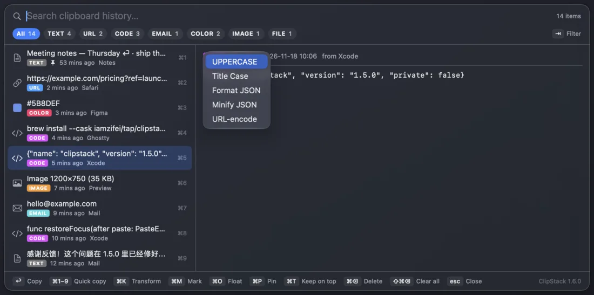

⇧⌘VFree clipboard manager for Mac
Everything you copy, kept.
Your Mac's clipboard only remembers the last thing you copied. ClipStack remembers the rest — text, links, images and files. Press ⇧⌘V in any app, find the one you need, press ↩, paste.
brew install --cask iamzifei/tap/clipstackFree · Open source (MIT) · macOS 13+ · Apple silicon
A real screen recording at normal speed. The history is demo data.
⌘0Try it here
Learn it in thirty seconds.
A working model of ClipStack, right in this page. Copy a few lines, then bring one back. It never touches your real clipboard.
1 · Notes — copy some lines
- URLhttps://staging.example.com/v1.9
- EMAILsupport@example.com
- COLOR#5B8DEF
- CODEnpm run build --watch
Or select any text here and press ⌘C.
↑↓ move · ↩ copy · ⇥ filter · esc closeTap an entry to paste it
Your progress · 0 / 5
- Copy two things
- Open ClipStack
- Paste an older one
- Find one by typing
- Filter by type
In-browser model of the real panel · demo clipboard only · on phones, tap instead of pressing keys
⌘1What it is
One clipboard slot is not enough.
Copy a link, then copy an email address, and the link is gone. ClipStack is a small app in your menu bar that saves every copy as it happens, so nothing you copied is ever lost — and any of it is one shortcut away.
Without ClipStack
Each copy overwrites the last. To get the link back you go find it and copy it again.
With ClipStack
Every copy is kept, newest first, tagged by type. Pick any of them and it goes back on the clipboard.
⌘2Why it helps
Keeps your last 300 copies, brings any back with 1 shortcut, uploads 0 bytes.
Nothing you copy gets lost
The last 300 copies are kept by default — text with its formatting, images and files from Finder. Pinned entries never age out.
Found in seconds, from any app
⇧⌘V opens the history over whatever you're doing. Type a few letters to search, or press Tab to show just links, code or images.
Stays on your Mac
No account, no sync, no analytics. Passwords that your password manager marks as private are never saved.
⌘3How to use it
Three keys. That's the whole app.
Download, drag ClipStack to Applications, open it. It lives in the menu bar — no Dock icon, no window to manage. Then:
1Copy, as you always do.
Nothing new to learn. Every time you copy, ClipStack saves it quietly in the background.
2Press ⇧⌘V to see everything.
The panel opens over the app you're in, newest first. Use ↑ ↓ or just type to search — the right side shows the whole entry.
3Press ↩, then paste.
The entry goes back on your clipboard, with its original formatting. Turn on “Paste into the previous app after choosing” in Settings and ↩ pastes it for you.
⌘4For the keyboard-only crowd
Hold ⇧⌘. Tap V. Let go.
Like ⌘Tab, but for your clipboard. Keep ⇧⌘ held and tap V again to step back through history; release to paste the highlighted entry. A single press still just opens the panel.
Optional, off by default · Turn on in Settings → Pasting · Needs macOS Accessibility permission · Pick any combo you like
⌘5Beyond the basics
Small moves that add up.
Everything happens inside the same panel, from the keyboard. These are all in the app today.
Change it before you paste.
⌘K⌘K opens transforms for the selected entry: change case, trim, join lines, format or minify JSON, URL-encode, convert a colour, pull the text out of a screenshot (on-device OCR), copy file paths. The result is saved as a new entry.

Every entry is tagged.
⇥URL, EMAIL, CODE, COLOR, TEXT, IMAGE, FILE — so you can spot the right one at a glance. Press Tab to show one type at a time; colours get a swatch and HEX, RGB and HSL.

Merge several into one paste.
⌘MMark entries with ⌘M (or ⌘-click), then press ↩: they're copied as one, joined by new lines, in the order you marked them.

Float it next to your work.
⌘O⌘O pops any entry out as a small always-on-top note you can drag anywhere. Or press ⌘T and the whole panel stays on top while you type in another app.

Type to find it.
abcThe search field is ready the moment the panel opens. Input methods such as Chinese pinyin work too.

Images and files, too.
⌃⇧⌘4Screenshots and copied images get a full preview; files copied in Finder come back as files. Rich text pastes back as rich text.

⌘6Cheat sheet
Every key, on one page.
⌘7Questions
Everything you might ask.
History is a plain folder in your Library. No account, no sync, no analytics — the only network request is the update check.
Anything a password manager marks as concealed or transient is never recorded (the nspasteboard.org convention).
ClipStack asks for nothing to do its job. Only the two optional paste helpers use Accessibility, and only once you switch one on.
What exactly is ClipStack?
A clipboard manager for macOS. It sits in the menu bar and saves everything you copy — text, links, code, images, files — so you can bring any of it back later with ⇧⌘V instead of finding and copying it again.
Is it really free?
Yes. ClipStack is free and open source under the MIT licence, with no subscription and no paid tier. If it saves you time, there's an optional Ko-fi tip jar.
How do I install it?
Download the DMG from the releases page, drag ClipStack to Applications and open it. A short welcome guide shows the keys the first time. With Homebrew it is one line: brew install --cask iamzifei/tap/clipstack. After that, ClipStack checks for updates and installs them from inside the app.
Which Macs does it run on?
macOS 13 Ventura or later, on Apple silicon (M-series) Macs.
Is my clipboard data private?
Everything stays on your Mac, in ~/Library/Application Support/ClipStack. Nothing is uploaded, and entries a password manager marks as concealed are never saved. You can delete one entry with ⌘⌫ or clear everything from the menu-bar menu.
Does it need any permissions?
Not to work. Two optional settings — paste straight into the app you came from, and hold ⇧⌘ to cycle — need macOS Accessibility, and macOS only asks when you turn one on.
Can I change the shortcuts?
Yes. In Settings, click any shortcut — open the panel, open Settings, clear history, or the hold-to-cycle combo — and press the new keys.
What languages does it speak?
English, 简体中文, 繁體中文, 日本語, 한국어, Español, Français and Deutsch. It follows your Mac's language, or pick one in Settings.
More free Mac apps from the same maker
Copy once. Paste whenever.
brew install --cask iamzifei/tap/clipstackFree forever · No subscription · No account